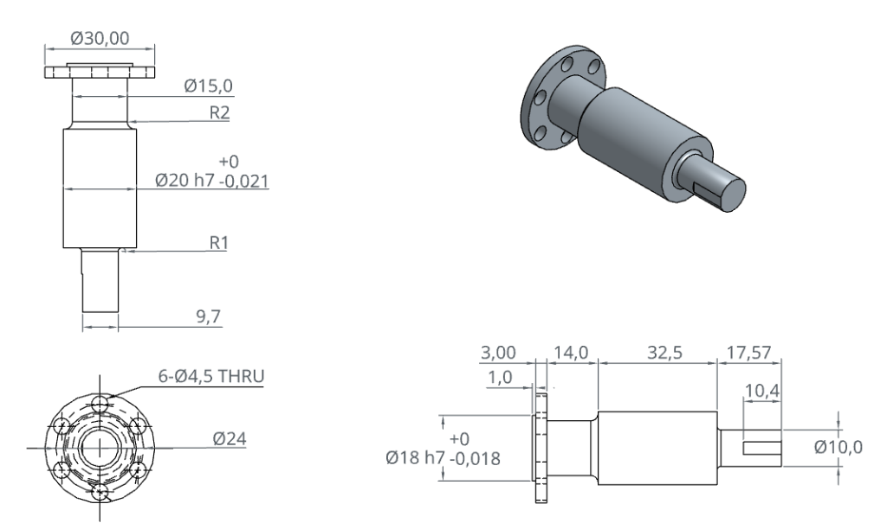
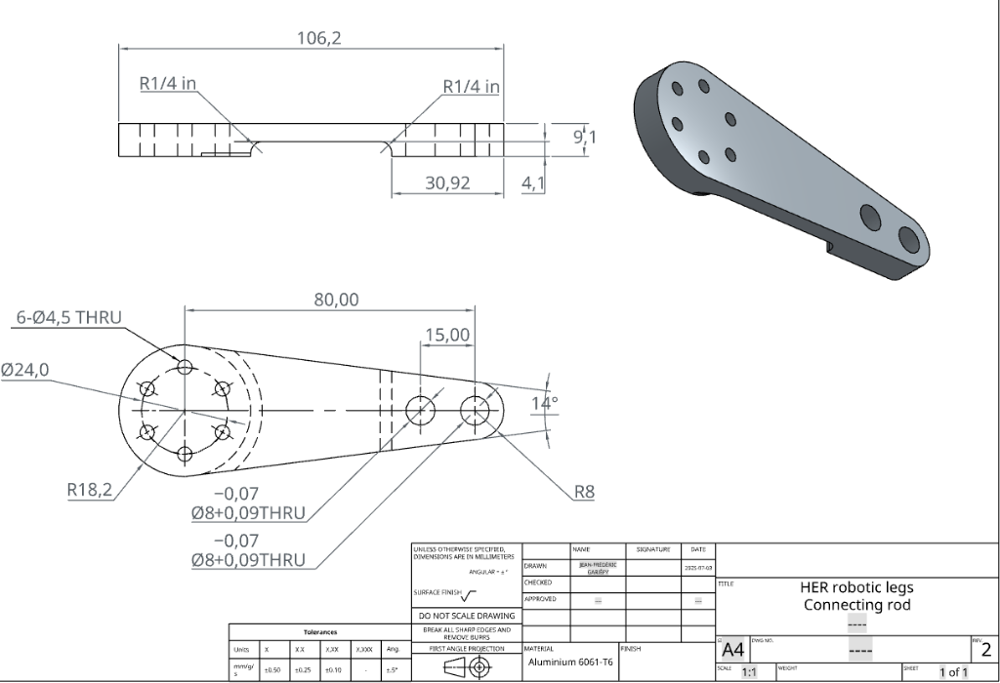

Enseignement d'exploration Seconde Sciences de l'Ingénieur (SI & CIT) — Modélisation volumique 3D & Lecture de plans techniques
Pour TOUTES les conceptions et activités modélisées (tutoriels officiels Intermediate Sketching, Revolve, Sweep, Coffee Cup, Wheel Rim, pièces d'application 1 à 6 et grand défi d'autonomie) :
1. Capture d'écran 3D : Réalisez une copie d'écran claire de chaque pièce terminée sous Onshape en vue isométrique 3D (avec l'arbre des fonctions visible à gauche).
2. Insertion dans Docs Classroom : Collez chaque copie directement dans votre document de compte-rendu Docs assigné dans le devoir Google Classroom.
3. Relevé des grandeurs physiques : Sous chaque capture, indiquez le nom de la pièce, le matériau assigné, ainsi que le volume (en mm³ ou cm³) et la masse (en grammes) mesurés avec l'outil Mass Properties (icône balance en bas à droite).
Pour générer une pièce de révolution, on ne dessine JAMAIS la pièce complète dans l'esquisse !
On trace UNIQUEMENT le demi-profil fermé situé d'un seul côté par rapport à l'axe de construction (au-dessus de l'axe). Pour coter un diamètre, cliquez sur le segment, puis sur l'axe, et positionnez la cote sous l'axe (Onshape applique automatiquement le symbole diamètre ⌀).
Pour générer un solide par balayage, il faut obligatoirement DEUX esquisses distinctes :
1. L'esquisse de Trajectoire (Chemin / Path) : Tracée sur un plan (ex: Front), elle définit la colonne vertébrale du solide (droites, arcs tangents, splines).
2. L'esquisse de Profil (Section) : Tracée sur un plan perpendiculaire (normal) passant par l'extrémité du chemin (ex: Right ou plan de référence normal).
💡 L'astuce indispensable : Appliquez une contrainte Coïncident (ou Perçant / Pierce) entre le centre du profil et l'extrémité du chemin pour garantir la continuité géométrique !
• Dépouille (Draft) : Pente d'angle (2° à 5°) indispensable pour démouler les pièces injectées en plastique ou fonderie sans arrachement.
• Coque (Shell) : Évide instantanément un solide en créant une épaisseur de paroi constante. Il suffit de sélectionner la face ouverte à supprimer (ex: l'ouverture d'une tasse ou d'un entonnoir).
• Nervure (Rib) : Renforce une pièce contre la flexion. Dans Onshape, tracez une simple ligne droite ouverte sur le plan médian : l'outil Rib prolonge automatiquement la matière jusqu'aux parois environnantes !
Dans votre document Onshape (nommé TP_CAO_2SI_NOM_PRENOM), réalisez les deux tutoriels officiels en suivant les étapes pas-à-pas pour maîtriser les fondations de l'esquisse et de la révolution :
Maîtrisez les relations géométriques avancées, les lignes de construction, les arcs tangents et la symétrie.
Q).T).M).Apprenez à générer des solides cylindriques et toriques en faisant tourner un profil fermé autour d'un axe.
Générez un solide en faisant glisser un profil 2D fermé le long d'une trajectoire courbe continue.
Fusionnez la Révolution et le Balayage pour modéliser une tasse ergonomique complète avec évidement.
Découvrez les fonctionnalités de conception industrielle : dépouilles de démoulage, coques et nervures de renfort.
Créez un nouvel onglet Part Studio pour chaque pièce (clic sur le + en bas à gauche d'Onshape > Create Part Studio). Lisez attentivement les esquisses et plans cotés ci-dessous, appliquez la méthodologie et vérifiez votre volume à l'aide de l'outil Mass Properties (icône balance en bas à droite).
Aluminium 606110 081 mm³ (± 25 mm³)~27,2 g
⌀10, ⌀34, ⌀50).Acier doux / POM Delrin23 692 mm³ (± 35 mm³)23,69 cm³
Q).⌀12 (alésage), ⌀24 (moyeu), ⌀40 (corps).Bronze / Acier / Laiton19 348 mm³ (± 35 mm³)19,35 cm³

Acier standard / Inox16 196 mm³ (± 40 mm³)~127,1 g (densité 7,85 g/cm³)
Liaison cinématique remarquable : Observez bien la tête circulaire de cette bielle ! Elle comporte exactement les mêmes 6 perçages ⌀4,5 mm répartis sur le diamètre ⌀24,0 mm que la bride de la pièce 4 précédente. Ces deux pièces constituent un sous-ensemble mécanique réel articulé du robot bipède "HER robotic legs".

18,2 + 80 + 8 = 106,2 mm.6,35 mm) sur les transitions intérieures de l'usinage.Aluminium 6061-T619 750 mm³ (± 500 mm³)~53,3 g (densité 2,70 g/cm³)
Aucun plan coté imposé pour cette pièce : vous êtes le designer !
Après avoir suivi l'exercice officiel Coffee Cup, créez un nouveau Part Studio et concevez une tasse originale qui répond aux besoins d'un utilisateur (mug de bureau, tasse à espresso élégante, bol ergonomique, mug isotherme...).
Esquissez votre demi-profil fermé sur le plan Front (formes conique, galbée, tulipe, etc.) d'un seul côté de l'axe vertical.
Évidez la tasse en supprimant la face supérieure avec une épaisseur de paroi réaliste (2,5 à 4 mm).
Dessinez une trajectoire ergonomique pour 2 ou 3 doigts, créez un profil normalisé contraint par coïncidence et balayez.
Adoucissez le bord de la lèvre supérieure et les racines de l'anse. Assignez un matériau réaliste (Céramique, Porcelaine, Verre...).
+ en bas à gauche > Create Part Studio et nommez l'onglet Tasse_Design_Perso.50 000 mm³ à 300 000 mm³
Mise en situation technologique : Lors du transvasement de fluide technique (huile, liquide de refroidissement) en atelier mécanique, un entonnoir ordinaire forme un bouchon étanche dans le goulot du réservoir. L'air ne pouvant s'échapper, il se produit un refoulement saccadé avec projections ("phénomène de glouglou").
Votre mission d'ingénierie : Modéliser l'entonnoir technique optimisé qui intègre 4 nervures aérauliques extérieures (pour ménager des évents d'évacuation d'air), une poignée ergonomique balayée avec œillet de suspension, une coque uniforme et un embout d'écoulement biseauté à 45°.
Synthèse des 5 compétences du cycle : Ce projet mobilise à lui seul l'ensemble des fonctionnalités professionnelles : 1. Révolution (pavillon conique + fût) • 2. Coque (épaisseur constante 2 mm) • 3. Balayage (anse ergonomique sur plan normal) • 4. Nervures (renforts aérauliques ouverts) • 5. Répétition circulaire (4 nervures à 90°).
Polypropylène (PP) injecté (densité 0,92 g/cm³)40 658 mm³ (± 500 mm³)~37,4 g
| Fait | Critères d'évaluation & Compétences visées (Seconde SI & CIT) | Validation | Barème |
|---|---|---|---|
| Partie 1 : Fondations & Tutoriels Officiels Onshape Learning Center | |||
| Activité 1 : Intermediate Sketching (relations géométriques, tangences, lignes noires contraintes). | Fondamental | 2 pts | |
| Activité 2 : Exercise: Revolve (axe de révolution, demi-profil fermé, cotation au diamètre). | Fondamental | 2 pts | |
| Activité 3 : Exercise: Sweep (trajectoire chemin + profil normalisé, coïncidence et balayage). | Fondamental | 2 pts | |
| Activité 4 : Exercise: Coffee Cup (tasse complète associant révolution, balayage et coque). | Approfondissement | 2 pts | |
| Activité 5 : Exercise: Wheel Rim (roue avec dépouille de démoulage, coque et nervures circulaires). | Approfondissement | 2 pts | |
| Partie 2 : Pièces d'application autonome sur plan technique & Design Libre | |||
| Pièce 1 (Manivelle) : Esquisse totalement contrainte, volume conforme (10 081 mm³ ±25). | Acquis / Non acquis | 2 pts | |
| Pièce 2 (Poulie à gorge) : Demi-profil fermé sur 1 seul côté de l'axe, volume conforme (23 692 mm³ ±35). | Acquis / Non acquis | 2 pts | |
| Pièce 3 (Galet épaulé) : Révolution avec gorge circulaire R3, volume conforme (19 348 mm³ ±35). | Acquis / Non acquis | 2 pts | |
| Pièce 4 (Arbre à collerette) : Révolution multi-paliers, répétition circulaire 6x ⌀4,5, méplat (16 196 mm³ ±40). | Approfondissement | 2 pts | |
| Pièce 5 (Bielle robotique HER) : Profil à 14°, perçages ⌀24, usinage d'allègement de 4,1 mm (19 750 mm³ ±500). | Défi d'application | 2 pts | |
| Pièce 6 (Tasse Personnalisée - Design Libre) : Création originale intégrant Révolution, Coque, Anse balayée et Congés. | Créativité & Maîtrise | 3 pts | |
| Partie 3 : Grand Défi de Synthèse en Autonomie Totale | |||
| Pièce 7 (Entonnoir technique d'atelier) : Révolution cône/fût, biseau 45°, coque 2 mm, anse balayée ⌀8 avec œillet, 4 nervures aérauliques à 90° (40 658 mm³ ±500). | Expert SI & CIT | 4 pts | |
| Partie 4 : Rendu Numérique & Compte-Rendu Google Docs (Classroom) | |||
| Compte-rendu Docs Classroom complet : Copie d'écran 3D pour TOUTES les conceptions (tutos 1 à 5, pièces 1 à 7) avec matériaux, volumes et masses annotés sous chaque image. | Communication Technique | 3 pts | |
| Total général : | / 30 pts | ||